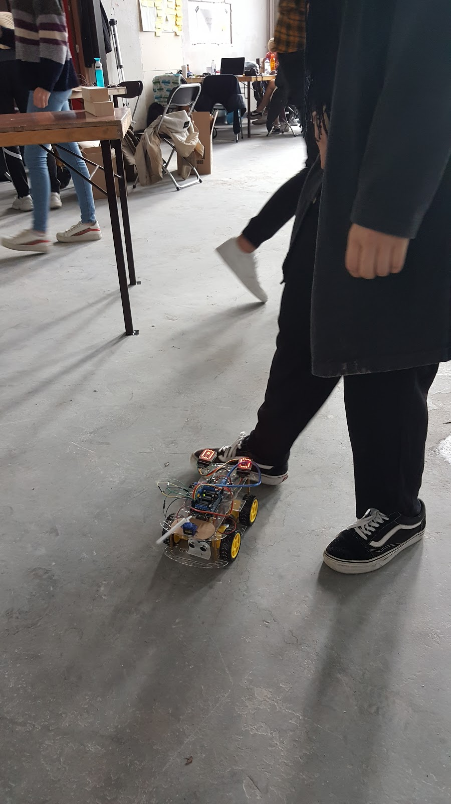

Lab Weeks - Dag 8
Vandaag hebben we aangegeven op welke plek we ons product willen laten zien tijdens de expo. Ook zijn we verder gegaan met het verbeteren van de robothond. Vandaag hadden we namelijk last van een nieuw probleem. De arduino werkt dus met een setup fase en daarna een loop die continu doorgaat. Vandaag was er echter iets aan de hand waardoor de arduino enorm vaak werd gereset. Hierdoor begon de arduino dus weer bij de setup fase. Dit gebeurde vaak wanneer de hond iets detecteerde met de proximity sensor. Deze bug hebben we vandaag helaas niet kunnen fixen. Vandaag waren we dus vooral veel bezig met het continu aanpassen van code, uploaden van code naar de arduino op de robothond zodat we alles konden testen. Hieronder een foto gemaakt door Danique, waarbij we zien dat Hiba de proximity sensor/rij code test.
Een van de vele testsessies: